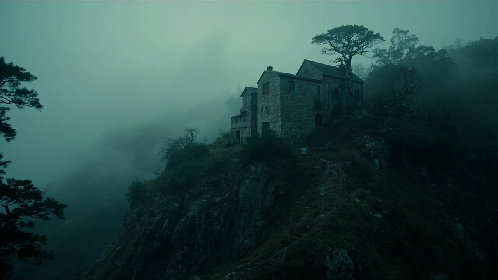
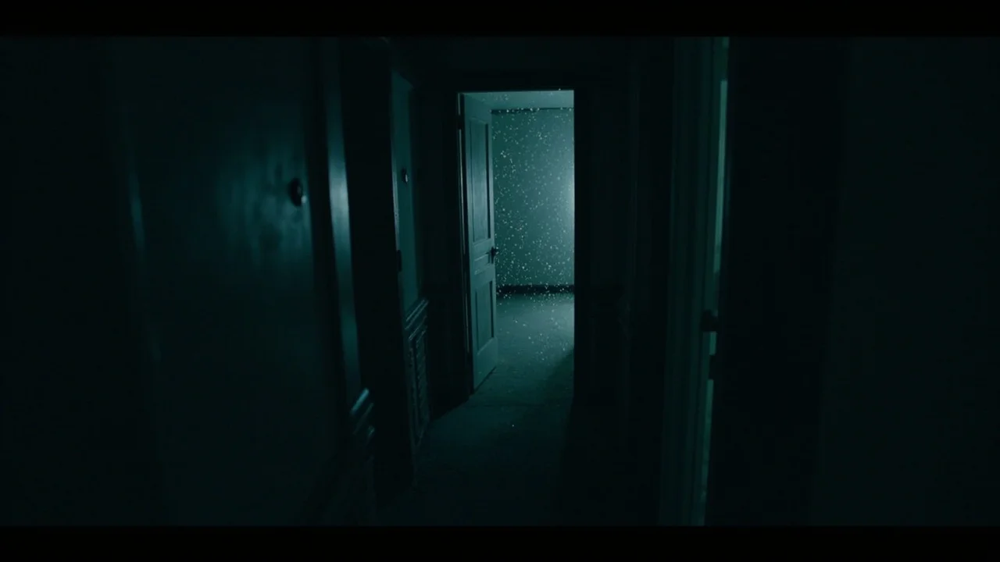
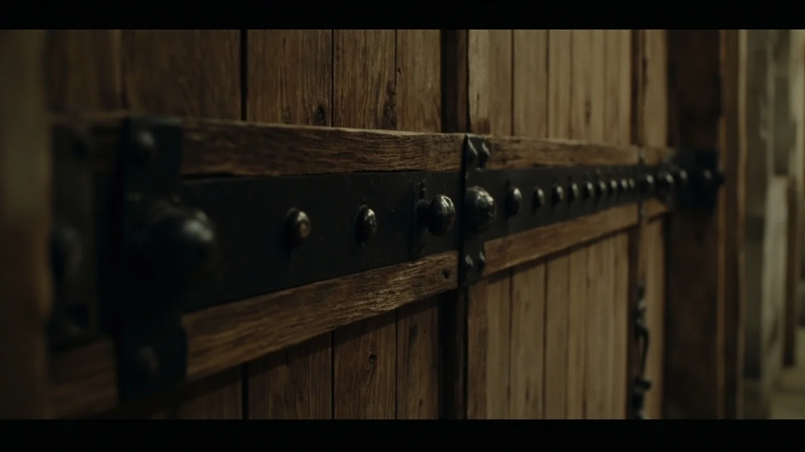
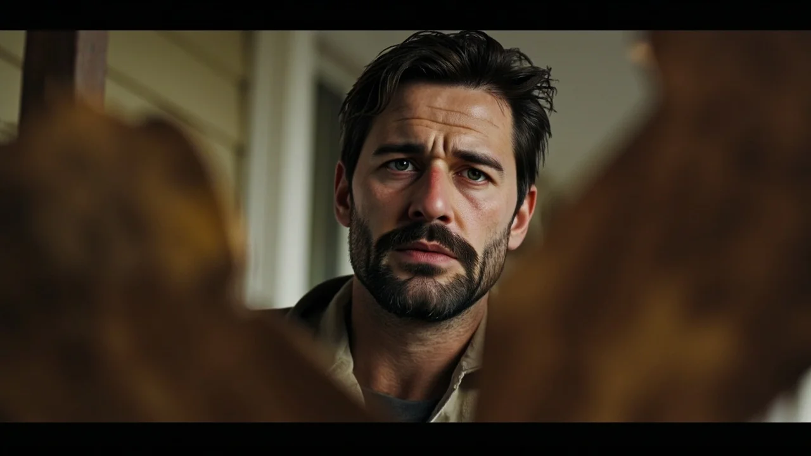
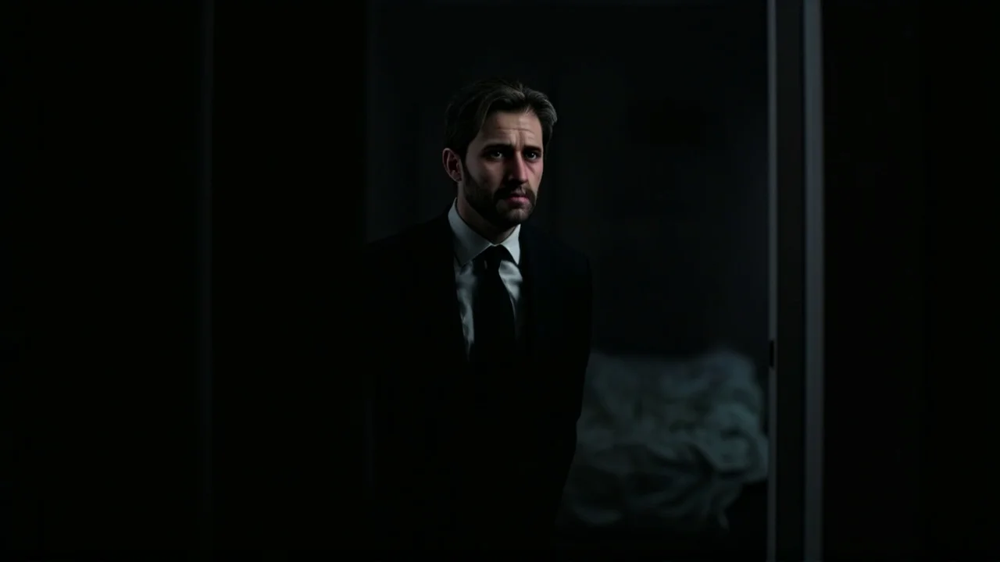

El cerrojo de hierro pesaba en la mano de Álvaro como un trozo de plomo frío. Hacía tres semanas que se había instalado en la solana de Navas del Brezo, donde los robles crecían tan apretados que el cielo quedaba reducido a jirones de niebla. La casa de piedra había pertenecido a su abuelo Román, un carpintero huraño que abandonó el pueblo a finales de los noventa sin dar explicaciones y levantó aquellos muros sobre una ladera escarpada.
Al principio, el silencio del bosque le pareció una bendición. El olor a leña, el crujido de las vigas y el rumor del arroyo bastaban para calmar el zumbido de la ciudad. Pero a la cuarta noche, la quietud se quebró.
Ocurrió a las dos y cuarenta exactas de la madrugada. Álvaro dormitaba cuando tres golpes secos y pesados retumbaron contra el roble de la entrada. Fue el impacto medido de tres nudillos contra el madero central, con un segundo exacto entre cada sacudida.
Bajó la escalera con la linterna y una barra de uña. Encendió el foco exterior antes de abrir. Al descorrer el pasador, una bocanada de humedad gélida le dio en la cara. El porche estaba vacío. Las hojas secas reposaban intactas bajo la luz; no había huellas en la grava ni ramas rotas en el sendero. Sin embargo, en el centro del peldaño de caliza, una mancha de agua negra brillaba bajo el foco, despidiendo un hedor denso a cieno de riada y a madera podrida.
La llamada se repitió las dos noches siguientes con puntualidad quirúrgica. A las dos y cuarenta en punto, el triple golpe estremecía la planta baja. Para cuando Álvaro bajaba, solo encontraba el vaho helado y el hedor a fango sobre la losa.
Al quinto día compró dos cámaras con sensor térmico e infrarrojos. Fijó una en el recibidor, enfocando la puerta y el cerrojo; instaló la otra en el descansillo alto, orientada hacia el corredor que llevaba a su dormitorio.
Aquella noche se acostó vestido, con el portátil sobre las rodillas. Durante horas la pantalla solo mostró el barrido monocromático de las lentes: el grano gris de las paredes y las sombras inmóviles del zaguán.
A las dos y treinta y nueve, el minutero digital cambió. Álvaro contuvo el aliento.
En la imagen del recibidor, la manilla de latón bajó sola. El cerrojo resbaló con un chasquido metálico y la hoja de roble se abrió hacia dentro. Por el umbral entró una figura humana empapada de arriba abajo.
Se deslizaba pegada al suelo con rigidez atroz, dejando tras de sí un reguero oscuro que brillaba bajo los infrarrojos. Llevaba jirones de ropa cubiertos de barro fluvial y mechones apelmazados que le tapaban el rostro. Cruzó el zaguán y subió los peldaños sin flexionar las rodillas.
Álvaro quiso levantarse, pero el pánico le paralizó las piernas. La segunda cámara mostró a la criatura alcanzando el descansillo. Avanzó por la tarima y se detuvo frente a la puerta de su cuarto, a escasos centímetros de la madera.
Permaneció allí dos minutos y medio. Inmóvil. El agua turbia escurría de sus mangas y empapaba las junturas de los tablones. Luego, a las dos y cuarenta y tres, la imagen parpadeó con una ráfaga de estática blanca. Cuando se restableció, el pasillo estaba desierto.

Álvaro esperó al amanecer antes de salir. La tarima estaba seca. Pero al arrimar la nariz a la rendija inferior de su puerta, el tufo a cieno podrido seguía impregnado en la madera.
Álvaro pasó la mañana revolviendo los baúles de su abuelo en el desván. Entre cepillos y escuadras oxidadas, dio con una caja de cinc forrada de hule negro. Dentro había una docena de cuadernos de campo cuadriculados.
Eran dibujos de la casa, trazados a plumilla con minuciosidad obsesiva. Román había dibujado cada planta una y otra vez. Pero en todos los bocetos del piso superior aparecía un detalle imposible: al final del pasillo, donde en la realidad solo se alzaba una pared ciega de mampostería, el abuelo había dibujado una puerta de dos hojas con clavos de forja.
En los márgenes de los últimos cuadernos, la caligrafía se volvía temblorosa:
*«La casa no es un refugio; es un filtro. Lleva treinta años esperando fuera, empapada en la orilla del pozo. Sabe que no puede entrar a menos que alguien le conteste desde dentro. No abras. No hables. Si pronuncia tu nombre, muerde tus labios hasta sangrar. Solo necesita que la reconozcas una vez para ocupar la estancia vacía».*
En la última página solo había una frase repetida hasta rasgar el papel:
*«No es Clara. Ya no es Clara. El agua no devuelve a las personas».*
A mediodía, incapaz de soportar el peso de las paredes mudas, bajó hasta Navas del Brezo. En la única taberna abierta, Tomás Sanchís apilaba vasos tras el mostrador de cinc.
Tomás tenía sesenta y ocho años, las manos curtidas por la escarcha y una mirada severa que no titubeó al ver entrar al nieto de Román. Le sirvió un chato de vino negro sin que tuviera que pedirlo.
—Tienes la misma cara de espanto que traía tu abuelo cuando bajaba a por provisiones —dijo el viejo, secándose las manos en el mandil—. Te advertí que vendieras esa finca. Aquella loma no quiere a nadie vivo.
—Alguien llama todas las noches, Tomás —soltó Álvaro, apoyando los puños en la barra—. A las dos y cuarenta. He puesto cámaras. He visto entrar a alguien que no respira.

El tabernero dejó el trapo sobre el cinc y bajó la voz:
—Tu abuela Clara no se marchó con otro, muchacho. Hace treinta años hubo una riada negra en el barranco. Se llevó la majada donde tu abuelo levantó luego la casa. Clara intentó cruzar el vado de noche y la corriente la arrastró contra las peñas. Román encontró su pañuelo en los sauces, pero el cuerpo jamás apareció.
—El abuelo escribió que ella volvió —dijo Álvaro.
—No volvió ella —replicó Tomás—. Volvió lo que habita en las pozas del barranco cuando la tierra se traga a alguien sin sepultura. Al mes de la riada, Román empezó a oír los tres golpes. Levantó la casa creyendo que unos muros gruesos le darían descanso, pero la corriente no olvida su cauce. Esa cosa aprendió su voz. Luego aprendió sus recuerdos. Tu abuelo estuvo treinta años sentado en la cocina con la escopeta, escuchando a la mujer que amaba suplicarle detrás del madero que la dejara pasar porque tenía frío.
Tomás le agarró el brazo con una fuerza tremenda:
—Tu abuelo resistió porque sabía una ley vieja: lo que ronda en ese robledal puede empujar la aldaba, pero no tiene permiso para entrar si alguien de su sangre no lo invita desde dentro. Si le contestas, si tus oídos creen lo que dice, abrirás la puerta sin darte cuenta. Y de esa casa ya no se sale.
La noche cayó sobre la sierra con un temporal de aguanieve que azotaba los postigos. Álvaro atrancó la puerta principal con una viga de roble cruzada sobre soportes de forja. Subió a su cuarto y aseguró también la hoja con una cuña bajo el zócalo.
Se sentó en el suelo, con la espalda pegada al somier y la linterna entre las rodillas. La pantalla del teléfono marcaba las dos y treinta y siete.
El viento bramaba entre los robles. Álvaro miró cómo avanzaban los dígitos: dos y treinta y nueve con cuarenta segundos... cincuenta... cincuenta y ocho...
Las dos y cuarenta.
Tres golpes salvajes retumbaron en la planta baja. La vibración subió por la piedra hasta el suelo del cuarto. Álvaro apretó la mandíbula, clavándose las uñas en las palmas.
Desde el otro lado del roble de la entrada, una voz se alzó limpia, atravesando la mampostería como si las paredes fueran de papel.

—Álvaro... cariño... abre la puerta, por favor.
A Álvaro se le heló la sangre. No era la voz de su abuela Clara. Era la voz de su madre, Elena, fallecida en un hospital de Valladolid cuando él tenía siete años.
—Álvaro, mi vida... hace tanto frío aquí fuera... —suplicaba la voz, rota por el llanto—. Se me han calado los zapatos en el barro, hijo. Sé que estás ahí. Tienes la cicatriz de la bicicleta en la rodilla izquierda, ¿te acuerdas? Te cantaba la nana de los tres pastores cuando tenías miedo... Abre, cariño. Solo tienes que quitar la tranca.
Las lágrimas nublaron la vista de Álvaro. Aquel tono cálido, la cadencia exacta al pronunciar su nombre, la ternura de su infancia... todo era idéntico. Un impulso ciego le ordenó ponerse en pie y bajar corriendo para abrazar a su madre. Dio dos pasos tambaleantes hacia el pasillo.
Entonces recordó las palabras de Román: *«Muerde tus labios hasta sangrar. Si la reconoces, estás muerto».*
Álvaro apretó los dientes sobre su labio inferior hasta que el sabor metálico y caliente de la sangre le inundó la boca. El dolor cortó el embrujo. Cayó de rodillas sobre la tarima, tapándose los oídos.
—¡No eres ella! —masculló entre dientes—. ¡Tú no estás viva!
La voz en el porche enmudeció. Durante diez segundos solo se escuchó el goteo del agua en el alféizar.
De pronto, tres golpes suaves y helados sonaron directamente desde el interior de la pared de piedra a la que Álvaro estaba arrimado, a un palmo de su nuca.
La mampostería crujió. Del yeso agrietado brotó un hilo de agua oscura que resbaló por el rodapié. Y a través de la cal, pegada a su oído como si la boca estuviera embutida en el tabique, la voz de su madre susurró:
—Treinta años me tuvo Román esperando en el agua negra, Álvaro. Treinta años tiritando en el lodo. Pero él ya está pudriéndose bajo tierra. Tú eres joven. Tú tienes la sangre caliente. Tú solo tienes que abrir una vez.
Álvaro saltó hacia atrás, empuñando la linterna con manos temblorosas. El haz de luz barrió el pasillo por la rendija de la puerta.

Al fondo, donde siempre hubo un muro ciego de piedra, ahora se recortaba una puerta de dos hojas de roble negro, idéntica a la de los dibujos de su abuelo. La madera rezumaba una humedad espesa y por debajo del umbral salía un vapor blanquecino que apestaba a fango y a carne descompuesta. La hoja comenzó a abrirse despacio hacia fuera.
Álvaro bajó la escalera a saltos. Llegó a la entrada, retiró la viga de roble y abrió de par en par, buscando la noche.
Al cruzar el umbral, no salió al porche.
Apareció de nuevo en el pasillo superior, justo enfrente de la puerta abierta que rezumaba fango.
La casa se había replegado sobre sí misma como una trampa de piedra. Miró atrás: la puerta que acababa de cruzar daba otra vez al descansillo. Todas las salidas conducían al mismo corredor húmedo. Y desde la estancia negra del fondo, unos pasos pesados y chorreantes comenzaron a avanzar por la madera.
Álvaro retrocedió hasta meterse en la cocina baja. Cerró de golpe, empujó la pesada mesa contra la hoja y se acurrucó bajo la alacena, empuñando la navaja abierta. La voz comenzó a sonar en cada rincón de la casa: en la chimenea, en el desagüe, entre las junturas de los ladrillos. Le llamaba con la voz de su madre, luego con la de su abuela, luego con un coro de gargantas ahogadas que repetían su nombre sin tregua.
Álvaro se mordió la lengua hasta que el dolor le nubló la vista, repitiéndose que la noche tenía un límite y que el sol debía salir.
La luz del amanecer se filtró entre los postigos a las siete de la mañana.
Con el primer rayo de sol sobre la mesa, el zumbido de los muros se apagó. El olor a cieno desapareció y el silencio regresó a la casa.
Álvaro apartó la mesa con las pocas fuerzas que le quedaban y subió con cautela. Al final del pasillo, la puerta negra se había desvanecido; solo quedaba el muro encalado, seco y mudo. Bajó al zaguán: la puerta principal estaba abierta de par en par, mostrando el sendero y su furgoneta cubierta de escarcha.
No recogió ropa ni herramientas. Subió al vehículo, arrancó y bajó la pista forestal a fondo, sin mirar atrás hasta pisar el asfalto de la carretera comarcal.

Seis meses después, Álvaro vivía en un quinto piso en el centro de Madrid. Había vendido la finca a unos madereros con la condición de que derribaran la casa de piedra antes de talar las parcelas.
Trabajaba de nuevo en el estudio, salía a correr y dormía con una luz encendida en la mesilla. Con el tiempo, el terror de la sierra empezó a parecerle una pesadilla lejana, un delirio causado por el agotamiento y los cuadernos de Román.
Una madrugada de finales de octubre, una tormenta descargó sobre la capital con relámpagos que encendían los cristales.
Álvaro se despertó sobresaltado por un trueno. Miró el despertador de la mesilla. Los números de fósforo verde marcaban las dos y treinta y nueve.
Se quedó mirando la pantalla. Pasaron diez segundos... veinte... treinta...
El reloj marcó las dos y cuarenta.
En el silencio del piso, tres golpes secos, pesados y violentos retumbaron contra la puerta blindada del recibidor.
Álvaro sintió que se le detenía el corazón. Salió de la cama descalzo, atravesó el salón en penumbra y llegó al zaguán. La puerta estaba cerrada con tres vueltas de llave y la cadena echada. Miró por la mirilla.
El descansillo estaba bañado por la luz fluorescente de la escalera. Los peldaños estaban limpios. El ascensor seguía abajo. No había nadie.
Álvaro apoyó la frente en la madera, soltando un suspiro tembloroso que le aflojó los hombros.
—Solo es el tiro de la escalera —murmuró aliviado—. No hay nada. Aquí no hay nada.
Entonces, desde la oscuridad de su propio dormitorio a su espalda, entre las sábanas calientes que acababa de dejar, la voz suave y dulce de su madre susurró junto a su almohada:
—Álvaro, cariño... ya no hace falta que abras. Ya estoy dentro.